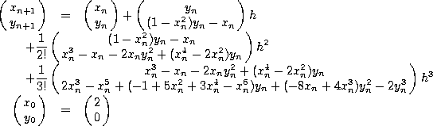

To illustrate how to derive an integration scheme using the Taylor method, let's look at a special case of the famous Van der Pol's equation
with initial value (x, y) = (2, 0). The second and third order derivatives of x, y with respect to time are

Hence a third order Taylor method for the initial value problem (3) is

As one can see from these equations, expressions for higher order derivatives are quite complicated, and the complexity increases dramatically as order increases. This difficulty is precisely the reason that Taylor method is not widely used.
Fortunately, for initial value problems where f is composed of polynomials and elementary functions, the higher order derivatives can be generated automatically. In fact, this is precisely the motivation of writting taylor.